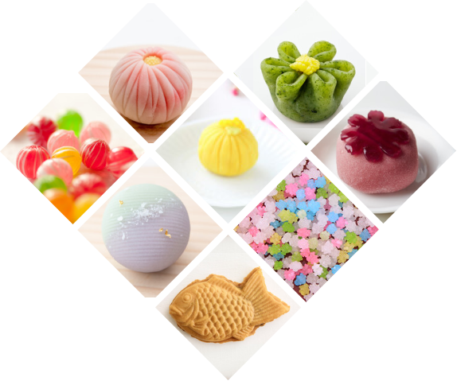
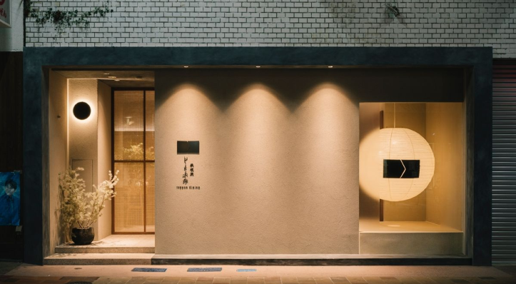

和菓子へのこだわり
おいしいものに出会ったら味わえるちょっとしたしあわせ。
私たちがつくるおかしが世界をしあわせにだってできる。
結び庵は、そんな大きな気持ちで日々和菓子づくりに向き
合っています。結び庵にしかできない、喜ばれるおかしを
つくるために。私たちには、ゆずれない「こだわり」があります。
じまんの和菓子
まんじゅう
糯米を使いじっくりと時間をかけて元種を仕込んだ独自の酒饅頭。寒い時季だけの限定品です。
羊羹
小豆や白小豆などの豆を煮て羊羹専用の餡をつくることから始まります。その餡に煮溶かした寒天と砂糖を加えて、じっくりと煉りあげていきます。
焼き菓子
素材や製法の異なる焼き菓子をご用意しております。それぞれの味わいや食感をお楽しみください。
最中
最中は江戸時代後期に生まれたお菓子で、名称は、形が満月のように見えることから、「最中の月」（中秋の名月の別称）に由来します。
その他のお菓子
さまざまなご用途でおつかいいただける「オリジナルお菓子」です。


店舗のご案内
日本橋店
直営店・喫茶

おしらせ
2025/05/10
明日（5月11日）ZIP!で「重」が紹介されます。
2025/02/27
いよいよ明日が最終日 – 大阪・阪急うめだ本店特設会場
2025/01/22
テレビ放送のお知らせ 「羽鳥慎一モーニングショー」1月23日水曜日朝8時（テレビ朝日）